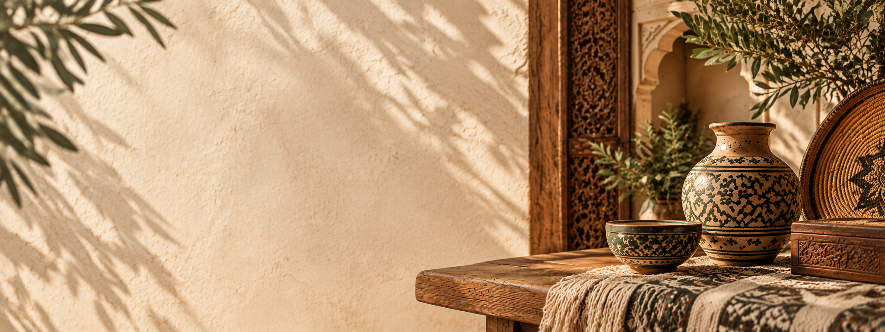

A PROPOS DE DAR L’ARTISAN
Dar L’artisan célèbre la richesse de l’artisanat marocain et la beauté du savoir-faire traditionnel. Chaque création raconte une histoire, façonnée avec passion, patience et authenticité. Notre mission est de préserver ce patrimoine et de faire rayonner le talent de nos artisans locaux.
Notre histoire
Derrière chaque création, une histoire. Derrière chaque geste, un héritage.
Dar L’artisan est née d’une passion pour la beauté des choses faites à la main. Nous mettons à l’honneur les artisans marocains, leurs gestes précieux et les traditions transmises de génération en génération. Chaque pièce est bien plus qu’un objet : c’est une rencontre entre authenticité, créativité et patrimoine marocain.

Nos valeurs
Chaque pièce raconte une histoire, chaque détail porte nos valeurs.

Authenticité
Des créations sincères, inspirées de notre héritage marocain .

Tradition
Un savoir-faire artisanal transmis de génération en génération.

Qualité
Chaque détail compte pour donner vie à des pièces uniques.

Créativité
L’élégance du patrimoine marocain revisitée avec une touche moderne.
Notre Engagement
Faire de l’artisanat marocain bien plus qu’un héritage : une source d’inspiration pour aujourd’hui et pour demain. Notre ambition est de faire rayonner son authenticité tout en lui offrant une place dans les intérieurs contemporains.